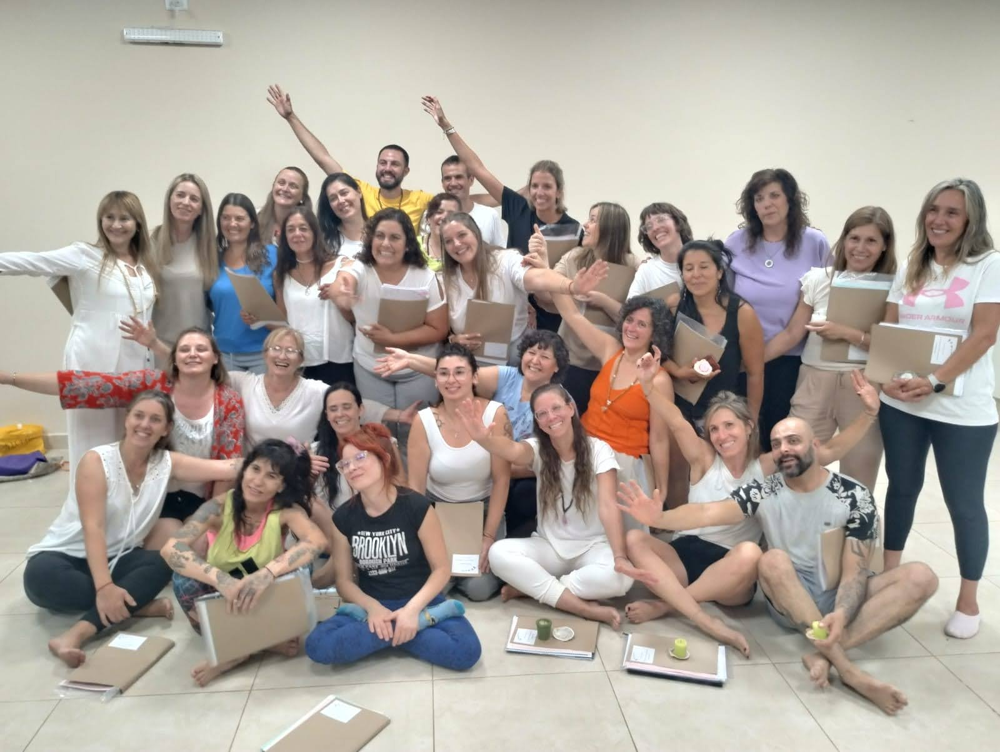

Una Nueva Humanidad es un espacio dedicado a la transformación personal a través de la sabiduría ancestral del Yoga y el Ayurveda. Creemos en el poder de estas disciplinas para cultivar la salud integral, la paz interior y el despertar de la conciencia.
Formación de líderes conscientes
Formar Profesores de yoga y meditación altamente capacitados, que sean líderes conscientes y agentes de cambio en sus comunidades. Queremos empoderar a personas que deseen compartir estas herramientas de transformación con otros, guiándolos en su camino hacia el bienestar y la plenitud.
Que abarcan tanto los aspectos técnicos como filosóficos del yoga y la meditación.
Aprende las técnicas, la filosofía y la pedagogía del yoga para guiar a otros en su práctica.
Sumérgete en el mundo de la meditación y aprende a guiar a otros en diferentes técnicas Meditativas.
Profundiza en temas específicos del yoga, ayurveda y desarrollo personal a través de talleres y retiros transformadores.
Enfoque holístico, integramos el yoga, el ayurveda y la meditación para una transformación completa.
Contamos con profesores expertos en yoga, meditación y ayurveda, con años de experiencia y pasión por la enseñanza.
Formarás parte de una comunidad de personas que comparten tus valores y tu pasión por el crecimiento personal.
Recibirás apoyo individualizado para alcanzar tus metas y desarrollar tu potencial.
Contamos con un equipo de profesores apasionados y certificados, egresados de nuestra academia:
Soy docente de vocación y apasionada por el camino de transformación que propone Una Nueva Humanidad. Me gradué como profesora de nivel inicial y primario en la Escuela Normal (UNS, 1987/1989). El yoga llegó a mi vida a los 35 años, y después de 7 años como practicante, comencé mi formación como instructora en 2007 con el sistema Iyengar. En 2010 me certifiqué como profesora en el Sistema Ayurvedic Yoga y, en 2012, como formadora en Yoga Ayurveda Terapéutico, capacitación realizada en la Escuela Argentina de Yoga y Ayurveda. Desde 2016, me dedico a formar profesores de yoga, habiendo acompañado a más de 400 alumnos en este camino. Mi enfoque es una enseñanza integral que une lo cognitivo con el sentir, creando un estado de conciencia donde el yoga y el Ayurveda se integren como una filosofía de vida. Actualmente, presido la Comisión de la Asociación Civil Yoga y Ayurveda Centro Holístico, que brinda apoyo legal y aval nacional a las formaciones de Yoga Ayurveda Terapéutico, Meditación Ayurveda y Rasayana.
Cumplo el rol de administración y organización en Una Nueva Humanidad, un proyecto que refleja mis valores y habilidades al servicio de la transformación personal y colectiva. Me formé como profesor de yoga terapéutico en 2018/2019, impulsado siempre por mi profundo compromiso con la ayuda al prójimo. Ser parte de este proyecto me inspira, viendo cómo nuestros cursos, encuentros y retiros generan un impacto positivo en quienes participan. Estoy convencido de que juntos contribuiremos a un mundo más justo y solidario, con el propósito de elevar la conciencia colectiva, poniendo el bienestar y la evolución espiritual en el centro de todo. ¡Bienvenidos!
Soy especialista en terapias holísticas y desde 2016 me formé como profesora de Ayurvedic Yoga, profesora superior de Ayurvedic Yoga Terapéutico (2017) y profesora de Meditación Ayurveda y Rejuvenecimiento (2018). En 2018 inicié mi camino en terapias florales y energéticas con Flores de Bach, Orquídeas y Tarot evolutivo. Más tarde, en 2019/2020, me capacité como Dynamic Coach y Terapeuta en Psicología Cuántica, lo que despertó mi interés por la medicina energética y la Epigenética. Actualmente desarrollo Ayursanas, un concepto orgánico de salud y bienestar inspirado por el Dr. Vasant Lad, con quien me estoy certificando en Ayurveda desde 2020. En 2024, me uní a Una Nueva Humanidad como divulgadora del Ayurveda, un conocimiento ancestral que promueve el autoconocimiento, el cambio personal y el fortalecimiento de nuestros vínculos. Mi propósito es compartir mi experiencia para inspirar una transformación desde el amor y contribuir al bienestar colectivo.
Entre 2016 y 2018 me formé como Profesor de Yoga Ayurveda Terapéutico y Meditación en la Escuela Argentina de Yoga y Ayurveda, guiado por mi gran maestra Mónica Milanese. Juntas convertimos un sueño en realidad con la creación de la Academia de Yoga Ayurveda Una Nueva Humanidad, donde tengo el privilegio de desempeñarme como docente en la formación de Yoga Ayurveda Terapéutico, compartiendo conocimientos mientras sigo aprendiendo y creciendo. Desde 2017 imparto clases de Yoga Ayurveda Terapéutico en Bahía Blanca, además de talleres y meditaciones virtuales a través de mi proyecto personal, Alma en Proceso. Mi propósito es compartir mi experiencia, mi viaje y lo aprendido en el camino, siguiendo las palabras de mi maestra: "Lo que se comparte se multiplica".
La práctica de yoga llegó a mi vida en 2011, gracias a Móni Milanese, quien sembró en mí la pasión por esta filosofía de vida. Buscando ser más feliz, en 2016 comencé la formación como profesora de Ayurvedic Yoga Terapéutico y Meditación, transformándome con cada desafío y aprendiendo a vivir en el proceso. Desde 2017, acompaño la formación en la Academia Una Nueva Humanidad y soy parte de la Asociación Civil Yoga y Ayurveda Centro Holístico, un sueño compartido con muchos seres maravillosos que buscamos transformarnos en mejores personas. Yoga ha sido mi gran aliado, brindándome calma en las tormentas y paz en el caos. Hoy, mi propósito es compartir mi experiencia y caminar junto a otros hacia la transformación, cultivando conciencia, gratitud y amor. ❤️ Namaste
Soy Profesor Nacional de Educación Física y entrenador de básquet desde 1996, con experiencia en todos los niveles educativos y en categorías formativas. Creo firmemente que mantener un buen estado físico es esencial para la salud física, mental y emocional. Estoy dispuesto a aportar mis conocimientos y experiencia para contribuir al sólido proyecto de Una Nueva Humanidad. ¡Feliz de ser parte de este camino de transformación!
Recuerda que el yoga, el ayurveda y la meditación son herramientas poderosas para transformar tu vida y contribuir a un mundo mejor.
Cada paso que das en este camino, cada práctica que realizas, te acerca más a la nueva humanidad que deseas ver en el mundo. ¡Namaste!